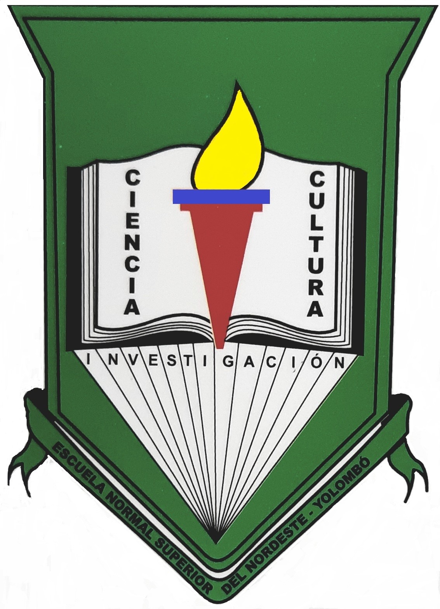

Escudo
Tiene forma de pentágono, en el vértice inferior se desprende una banda que lleva grabado el nombre de la Institución, el fondo es verde y representa la esperanza que tiene la Escuela Normal Superior del Nordeste de contribuir a una mejor calidad de la educación para Yolombó y el Nordeste Antioqueño. En el centro, hay un libro abierto, simboliza la apertura al conocimiento científico y cultural, es por ello que en él hay dos palabras: Ciencia-Cultura; en su interior hay una antorcha, representa la luz que guía el aprendizaje como un proceso continuo y permanente, nunca se apaga y que acompañará siempre la formación del maestro.
Bandera
La bandera está dividida en cuatro partes, cada una de ellas en forma triangular; sus colores son: blanco y verde intercalados así: los triángulos superior e inferior son blancos, el izquierdo y el derecho son verdes y van interceptados en el centro, donde está ubicado el escudo de la Escuela Normal Superior del Nordeste. El color blanco significa la pureza de espíritu que se desea fomentar en los estudiantes de la Normal, el verde significa la riqueza natural que posee el municipio, apreciable desde la institución, además representa la riqueza intelectual de sus estudiantes y la esperanza de construir un mañana mejor. Los colores blanco y verde van entrecruzados como deben ir integrados la riqueza natural e intelectual, la pureza espiritual y la esperanza de todos los actores educativos de la institución.
Himno
Coro
¡Oh Normal, oh Normal tan querida! del Nordeste ejemplo tú eres; hoy te vemos potente y erguida; Ofrecer sabiduría siempre quieres.
I
En momento crucial de nuestra vida debemos escoger alguna senda; dirijamos hacia acá nuestros pasos, la Normal del Nordeste nos espera.
II
La Normal del Nordeste ha sido gran lumbrera de lumbreras llena que ha guiado a jóvenes y niños, por rectas sendas de virtud y ciencia.
III
Cuantos años impartiendo enseñanza, cuanta luz de instrucción y verdad; tantos años quitando tinieblas de ignorancia, ignominia y maldad.
IV
Nuestros padres con gran optimismo, la ignorancia quieren desterrar de sus hijos, todos tan queridos, su futuro mejor preparar.
V
En tus aulas, hemos visto crecer los valores de la juventud, el amor por la investigación, Educación, ciencia y virtud.
VI
Maestra formadora de maestros, en tus manos está la juventud y ella construirá su propia vida, si lucha con constancia y rectitud.
VII
Qué será de este mundo en el futuro, sin un maestro aguerrido y bondadoso que ayude a construir en cada niño, un hombre libre, humano y generoso.
VIII
A subir la moral compañeros, la democracia y la participación, a subir, a subir siempre unidos, no dejemos perder la ocasión.
IX
Maestros, jóvenes y niños, con compromiso vamos a lograr: honradez, respeto y autoestima, liderazgo y creatividad.